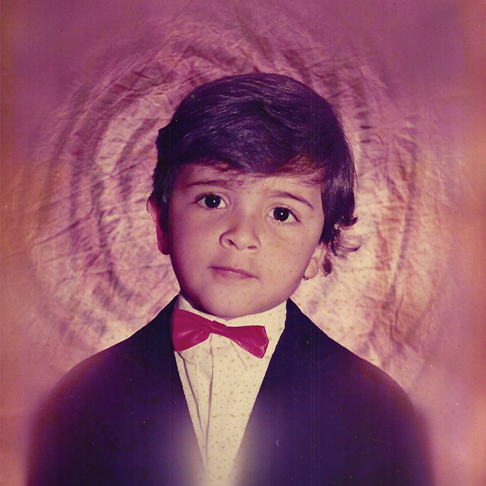
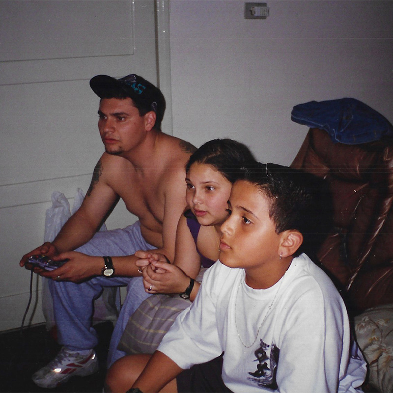
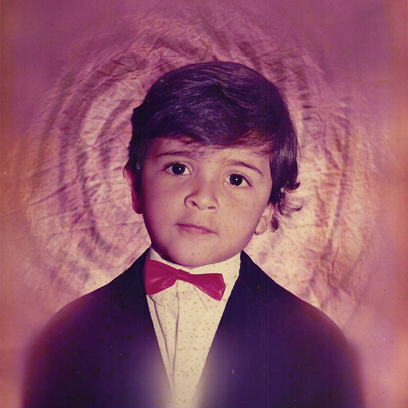
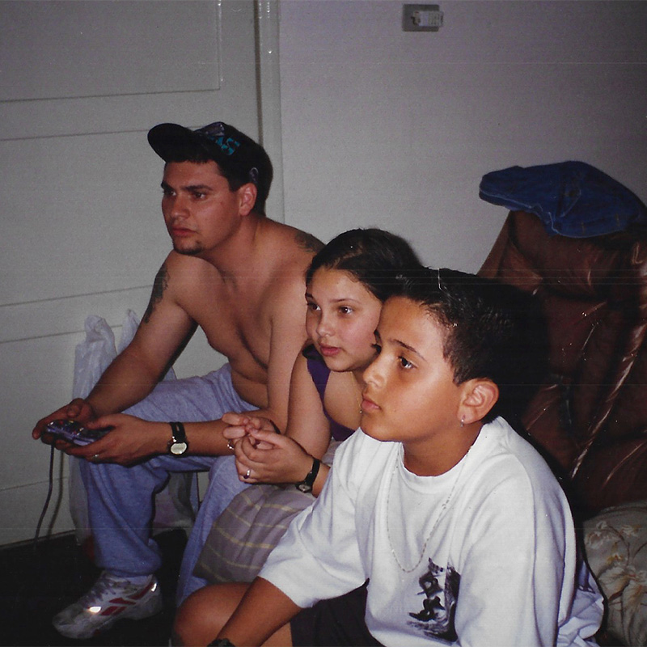

Infância

Infância: Fase do nascimento em 28/02/1985, até os 11 anos.
Adolescência

Adolescência: Fase > 11 até os 18 anos.
Adulto
Adulto: Fase > 18 até atualmente com 37 anos.

Infância: Fase do nascimento em 28/02/1985, até os 11 anos.

Adolescência: Fase > 11 até os 18 anos.
Adulto: Fase > 18 até atualmente com 37 anos.